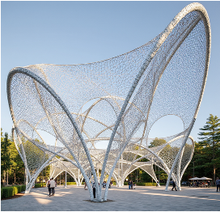

Continuous arches. Branching roots. An open canopy.

The reconstruction interprets the image as four unequal-height, continuous perimeter arches, joined by an anticlastic woven field and rooted in four flared branching support clusters. The side passages and central floor stay open.
The assumed footprint is approximately 28 × 24 m; the highest arch reaches 17.35 m. Ivory primary arches carry the fine net; branching tubes transfer loads toward four fixed bases. Hidden geometry is inferred. The original image is the visual reference, not a dimensioned drawing.
Small-displacement 3D Euler–Bernoulli beam elements model the arches and branches. A coarse prestressed bar mesh represents the woven field, including geometric tangent stiffness from 18 kN initial tension per equivalent bundle. The fine rendered threads are interpolated decoration on that equivalent field, not individually resolved cables.
Default steel E = 200 GPa; equivalent net E = 80 GPa. Arches: 300 mm diameter, 14 mm wall; branches: 180 mm diameter, 9 mm wall; trunks: 340 mm diameter, 18 mm wall. Net bundle area: 180 mm². All beam joints are rigid; all four bases are fixed.
The pressure is applied over the horizontal projected mesh area. Gravity is a downward applied pressure; member self-weight is not added. Lateral loading uses the same area as a comparison case, not a code-based wind calculation. Asymmetric loading acts on the x-positive half. Reported displacement is actual; the display multiplier affects geometry only. Axial force uses positive tension and negative compression.
The specified prestress defines a tangent model, but no initial equilibrium or form-finding analysis has been performed. Reactions and beam forces describe the incremental load only. Negative total cable force is flagged as slack; this linear solver does not redistribute it. It does not solve wrinkling, large deformation, buckling, connection behavior or capacity. Results support comparative exploration, not safety or code compliance.